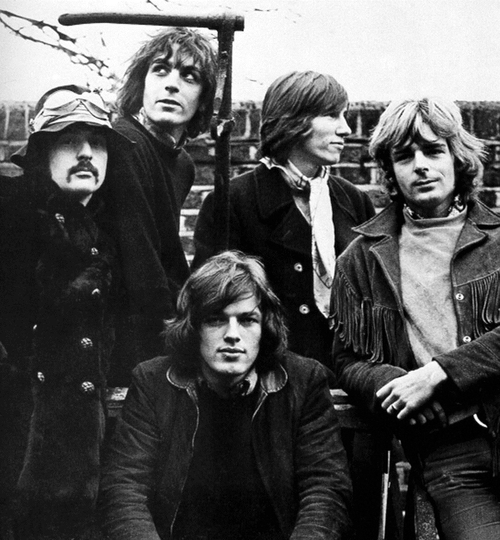
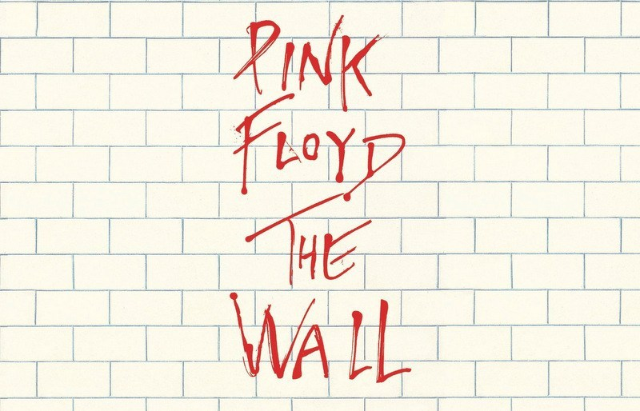
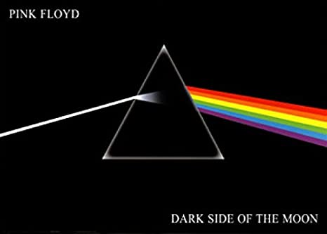
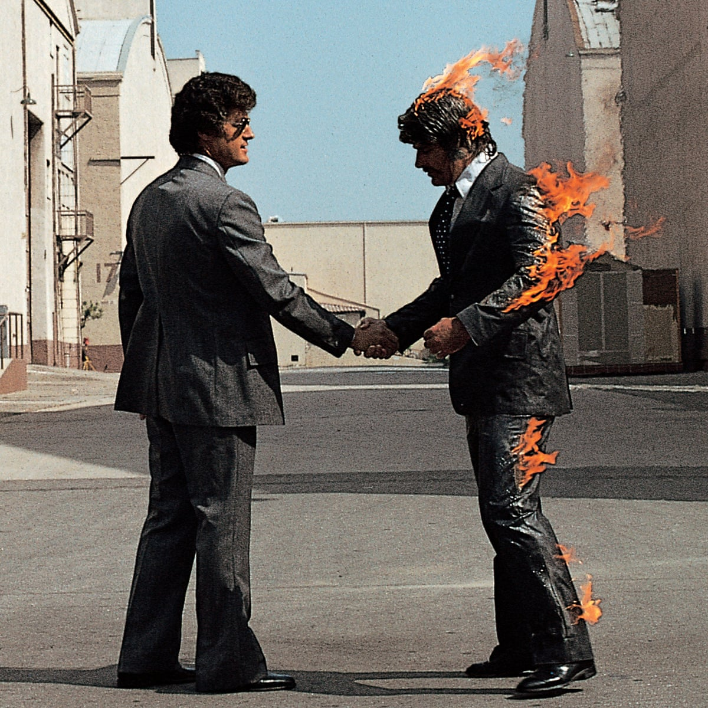

平克·弗洛伊德（英语：Pink Floyd）是一支于伦敦成立的英国摇滚乐队，他们最初以迷幻摇滚与太空摇滚音乐赢得知名度，而后逐渐发展为前卫摇滚乐队，并获得国际声誉。平克·弗洛伊德以哲学的歌词、音速试验、创新的专辑封面艺术与精致的现场表演闻名。他们是流行音乐史上最具商业成功与音乐影响力的摇滚乐队之一，在全球坐拥超过2.5亿的唱片销售量，仅美国就有7450万。平克·弗洛伊德于1996年与2005年分别入主美国摇滚名人堂和英国音乐名人堂。
| 时间 | 专辑名称 |
|---|---|
| 1967年8月4日 | The Piper at the Gates of Dawn |
| 1968年6月28日 | A Saucerful of Secrets |
| 1969年6月13日 | More |
| 1970年10月2日 | Atom Heart Mother |
| 1971年11月5日 | Meddle |
| 1972年6月2日 | Obscured by Clouds |
| 1973年3月1日 | The Dark Side of the Moon |
| 1975年9月12日 | Wish You Were Here |
| 1977年1月21日 | Animals |
| 1979年11月30日 | The Wall |
| 1983年3月21日 | The Final Cut |
| 1987年9月7日 | A Momentary Lapse of Reason |
| 1994年3月28日 | The Division Bell |
| 2014年11月10日 | The Endless River |
在推出了几张不很出名的专辑后，平克·弗洛伊德于1973年推出了《月之暗面》。这张专辑获得极其巨大的成功，成为摇滚乐史上的一个里程碑，专辑在美国排行榜上连续上榜591周，总计上榜超过1600周，为有史以来占据美国公告牌最高周数之专辑。总计全球销量至今已超过4000万张，为人类音乐史上前五畅销之唱片。《月之暗面》是一张概念性专辑，唱片中的曲目都围绕着现代生活中的压力这个主题。相当的曲目也涉及到了精神疾病的内容。《迷墙》造就了平克·弗洛伊德的顶峰。成了西方文化的一个经典作品。专辑本身被改编成电影，由阿伦·派克执导，鲍勃·戈尔多夫主演。
1975年他们又出了一张新的专辑《愿你在此》。此唱片献给已经离队的巴雷特。此唱片和1977年发行的《动物》同样获得了英美排行第一的好成绩。同时华特斯的曲风也继续贯彻乐队。
1979年，平克·弗洛伊德发行了《迷墙》。这是一张摇滚歌剧性质的双唱片，总长一个半小时，大部分由华特斯撰写。唱片讲述了一个英国歌手从孩童起的成长过程，被认为带有华特斯的自传的影子。主人公父亲阵亡于二战，从小失去父亲的主人公在严酷刻板，摧残个性的教育制度下成长，逐渐个人同外界筑起一座阻隔交流的高墙。最后在《审判》曲目中，高墙被推倒，结束曲《墙外》表现主人公重新回到社会后的迷茫和无助。



